바이브코딩 입문 v2 — 미리보기
보면서 따라 하는 바이브코딩 입문
AI 타로 결과 사이트 만들기
HTML
- 코드 없이 말로 만듭니다
- 모바일 타로를 배포합니다
저자 {저자명} / 출판 {출판사명}
목차
표지·목차 ······ p1~3
Chapter 1. AI·바이브코딩·ChatGPT ······ p4~12
ChatGPT 사용법 ······ p6~11
HTML·CSS·JS 기초 ······ p12
Chapter 2. 타로 사이트 만들기 ······ p14~81
카드 ······ p14~27
화면 설계 ······ p28~43
리딩·저장·공유 ······ p44~67
배포 ······ p68~81
부록 A. 다음 단계 안내 ······ p82~84
자산 저장소 다시 보기 ······ p82
참고 사이트 영감 ······ p83
다음 책 예고와 마침 ······ p84
Chapter 1. AI · 바이브코딩 · ChatGPT 기본 이해
재료는 셋입니다. AI, 바이브코딩, ChatGPT 입니다.
다음 챕터에서 이 셋으로 타로 사이트를 만듭니다.
1. AI 란 무엇인가
여기서 다루는 AI 는 한 줄로 부탁하면 초안을 그려 주는 견습 일러스트레이터 입니다.
흐름은 세 칸입니다. 사람이 부탁 → AI 초안 → 사람이 다듬기.
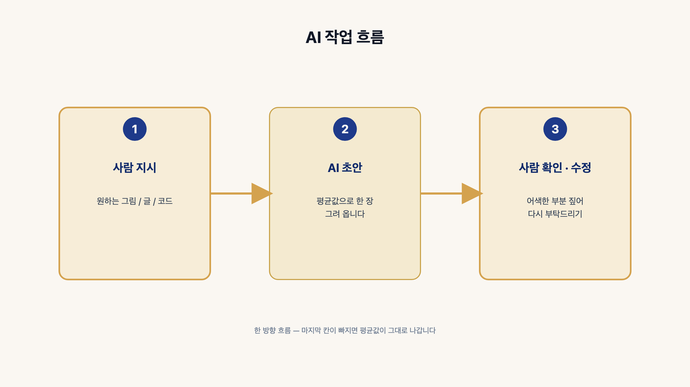
AI 는 도구입니다. 결정은 여러분이 합니다.
2. 바이브코딩이란 무엇인가
바이브코딩은 말로 부탁해 결과물을 받고, 마음에 들 때까지 다듬는 방식 입니다.
흐름은 여섯 칸입니다. 아이디어 → 부탁 → AI 생성 → 확인 → 수정 → 완성.
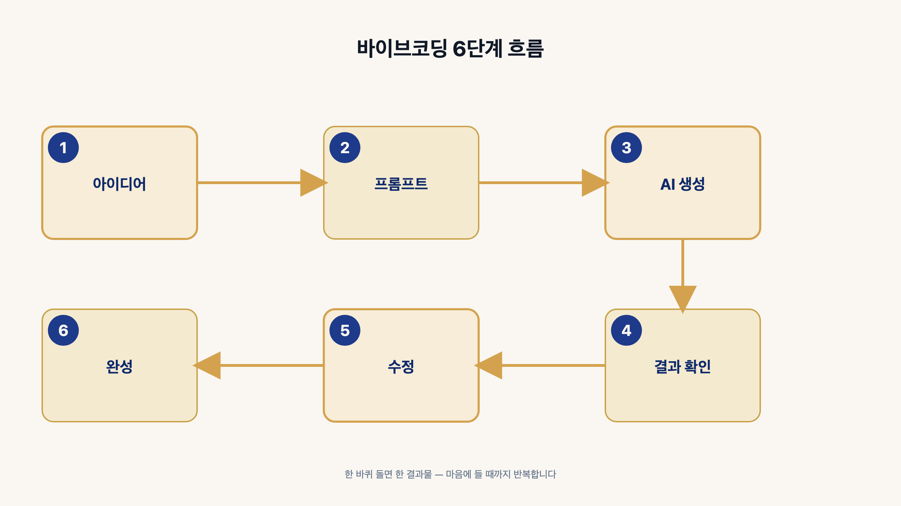
식당을 떠올려 주십시오. 손님은 칼을 들지 않습니다. 주문하면 셰프가 한 그릇을 내옵니다. 간이 안 맞으면 다시 부탁하시면 됩니다.
3. ChatGPT 화면 구성과 기능별 사용법
ChatGPT 는 글로 부탁하면 글로 답해 주는 비서 한 명입니다.
(1) 첫 화면 한눈
볼 자리는 두 곳입니다. 왼쪽 사이드바와 가운데 대화창 입니다.
사이드바는 지난 대화 보관함입니다. 대화창은 오늘 일을 부탁하는 자리입니다.
대화창 아래에 입력창이 있습니다. 입력창 왼쪽 끝에 작은 + 단추 가 있습니다.
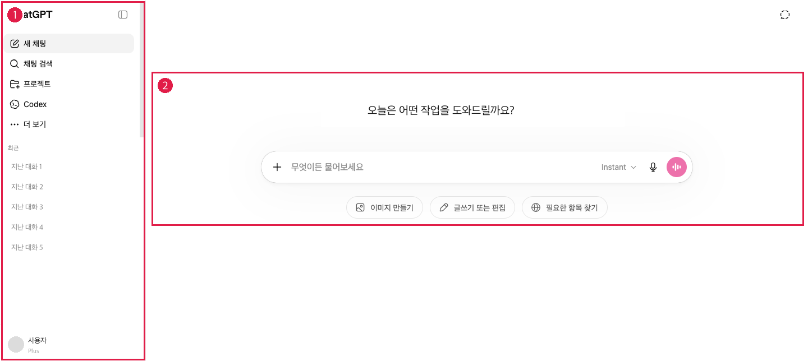
(2) 사이드바 — 대화 보관함
새 채팅 은 새 책을 펴는 자리입니다. 채팅 검색 은 옛 책을 다시 꺼내는 자리입니다.
결이 같은 작업은 한 채팅 안에서 이어 가십시오. 결이 다른 작업은 새 채팅을 펴십시오.
아래 프로젝트·Codex·더 보기 세 항목은 거의 안 씁니다.
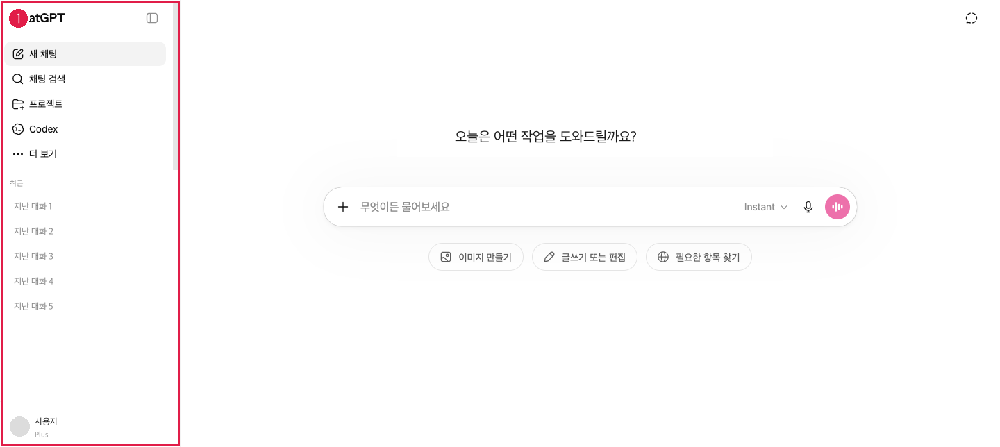
[실무 팁] 따라가시는 동안에는 새 채팅 한 곳만 쓰셔도 충분합니다.
(3) 가운데 대화창 — 오늘 일하는 책상
처음 펴면 인사말과 입력창이 보입니다.
입력창 아래에 지름길 단추 셋 이 있습니다. 이미지 만들기·글쓰기·필요한 항목 찾기 입니다.
입력창 오른쪽 끝에 아이콘 두 개가 있습니다. 마이크 는 목소리를 글로 적는 자리입니다. 종이비행기 는 글을 보내는 자리입니다.
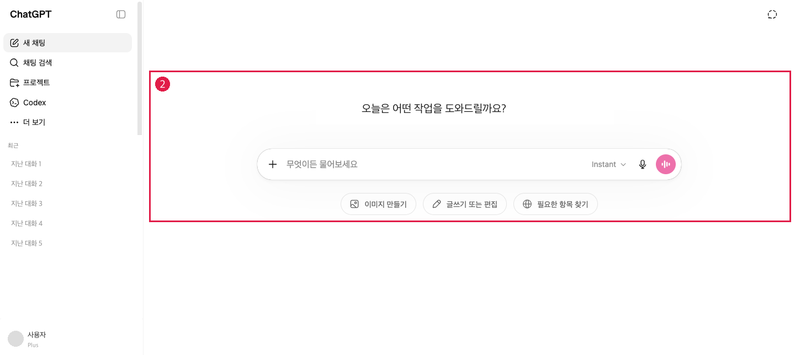
(4) + 메뉴 — 도구 펼치기
입력창 왼쪽 + 단추 를 눌러 주십시오. 위로 도구 메뉴가 펼쳐집니다.
손이 가는 자리는 두 개뿐입니다.
- 사진 및 파일 추가 — 그림이나 문서를 보여 주는 자리입니다.
- 이미지 만들기 — 그림을 새로 받는 자리입니다.
나머지 항목은 다루지 않습니다.
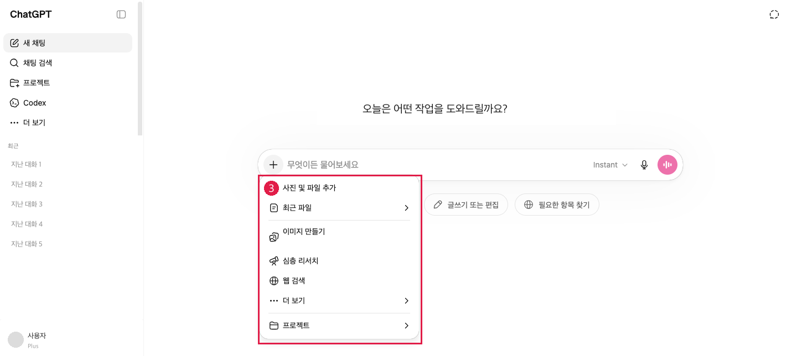
(5) 자주 쓰는 자리 네 곳
손이 자주 가는 자리는 네 곳입니다.
- 사이드바의 새 채팅
- 입력창 왼쪽의 + 메뉴
- 메뉴 안의 이미지 만들기
- 입력창 오른쪽의 종이비행기
[확인] 이 네 자리만 익히시면 다음 챕터에 막힘이 없습니다.
(6) 가입과 로그인 — 처음 오시는 분
ChatGPT 첫 화면입니다. 오른쪽 위 로그인 단추를 눌러 주십시오.
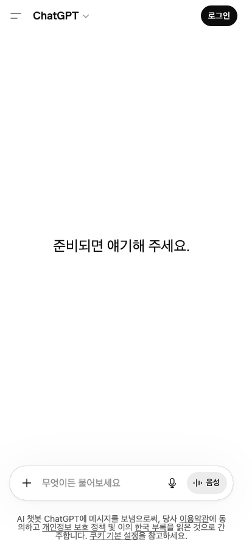
처음 오시는 분은 로그인 → 회원 가입 으로 들어가십시오. 이메일·비밀번호 두 칸을 채우고 계정 만들기 를 누르시면 됩니다.
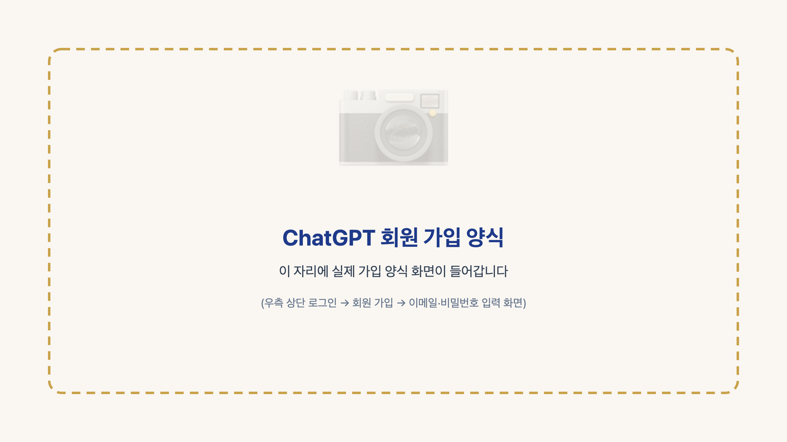
이미 계정이 있으시면 같은 자리에서 로그인하시면 됩니다.
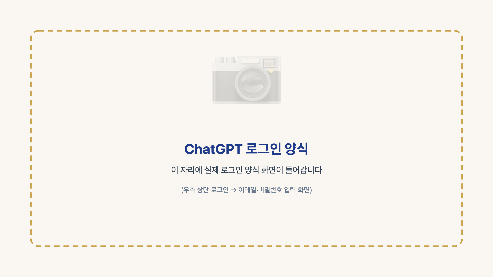
4. 뼈대 · 색·모양 · 움직임 — 이 정도만
웹 사이트 한 채는 세 도구로 만들어집니다.
뼈대(HTML) — 화면의 틀을 세웁니다. 색·모양(CSS) — 화면에 옷을 입힙니다. 움직임(JavaScript) — 화면이 움직이게 합니다.
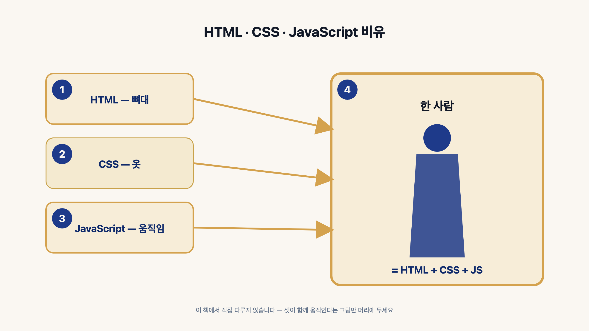
다음 챕터의 타로 사이트도 이 셋이 한 파일에 모입니다. 직접 다루실 일은 없습니다.
뼈대·색·움직임 세 그림만 머릿속에 두십시오.
[실무 팁] 코드를 한 줄도 안 쓰셔도 됩니다. “한 파일에 다 담아 주세요” 한 줄이면 셋이 알아서 자리 잡습니다.
5. 도구 점검 — Chapter 2 시작 전 한 쪽
다음 챕터로 넘어가시기 전에 손에 든 도구 체크리스트 다섯 칸을 한 줄씩 짚으십시오.
- 크롬(또는 엣지) 브라우저 — 저장한 결과를 더블클릭으로 열어 확인하는 창문입니다.
- ChatGPT 계정 — 자연어 부탁말을 받아 한 묶음으로 답해 주는 비서입니다 (절 3 (6) 에서 만드십니다).
- GitHub 계정 — 손님이 휴대전화로 들어올 주소를 받아 두는 우체국입니다 (절 8 에서 만드십니다).
- 카카오 디벨로퍼스(developers, 개발자) 계정 — 카카오톡 공유 단추 한 줄 키를 받는 자리입니다 (절 7 에서 만드십니다).
- 메모장 — ChatGPT 가 보내 준 한 묶음을 받아 한 자리에 저장하는 종이입니다 (윈도우 기본 / 맥은 텍스트 편집기).
다섯 칸이 손에 모이시면 다음 챕터로 넘어가십시오.
Chapter 2. AI 타로 결과 사이트 만들기
1. 이미지 생성 프롬프트로 타로 카드 만들기
타로 한 벌은 78장입니다. 손에 쥐는 길은 두 갈래입니다.
| 길 | 자리 | 시간 |
|---|---|---|
| (가) 직접 만드는 길 (이 책 권장) | ChatGPT 에 부탁말 한 묶음씩 받기 | 두세 시간 |
| (나) 자산 저장소에서 받는 길 (시간이 급하실 때) | ZIP 한 번에 79장 PNG | 5분 |
자산 저장소 자리는 https://github.com/cbr1024/vibe-tarot-assets 입니다. 이 책에서 사용한 카드 그림이 그대로 모여 있습니다.
(나) 자산 저장소에서 받는 다섯 단계
- 자산 저장소 자리(https://github.com/cbr1024/vibe-tarot-assets)를 브라우저에서 여십시오.
- 화면 오른쪽의 초록색 Code 단추를 누르십시오.
- 펼쳐진 메뉴에서 Download ZIP 을 누르십시오.
- 다운로드 폴더에 내려온 묶음 파일을 두 번 누르시면 자동으로 풀립니다.
- 풀린 폴더 안의 images 폴더를 여시면 카드 79장이 한 자리에 모여 있습니다.
(가) 직접 만드는 길 — 78장 한 가족 사진
타로 한 벌은 78장입니다. 한 가족 사진 결로 묶여야 합니다.
| 식구 | 장수 | 결 |
|---|---|---|
| 메이저 | 22장 | 인생의 큰 장면 |
| 컵 | 14장 | 마음·관계 |
| 지팡이 | 14장 | 의지·움직임 |
| 검 | 14장 | 생각·판단 |
| 펜타클 | 14장 | 재물·일상 |
| 합계 | 78장 | 한 벌 |
슈트(suit) 어휘 — 한 벌 카드의 가족 단위입니다. 메이저 22장과 마이너 56장 네 식구(컵·지팡이·검·펜타클)가 78장을 이룹니다.
대표 다섯 장만 받으십시오. 나머지는 이름만 갈아 끼우면 됩니다.
공통 스타일 한 줄로 못 박기
| 항목 | 사용값 |
|---|---|
| 분위기 | 빈티지·신비로움 |
| 구도 | 정면 대칭 |
| 색감 | 베이지·갈색 라인 |
| 비율 | 2:3 |
| 스타일 | 중세 일러스트 |
사이트 배경은 검붉은 갈색입니다. 강조 색은 머스타드 골드입니다.
빈티지·신비로움(vintage mystic) 분위기의 타로 카드를 그려 주세요.
정면 대칭 구도, 2:3 비율, 중세 일러스트 스타일로 통일합니다.
배경은 베이지 종이 톤, 선과 음영은 따뜻한 갈색 라인 드로잉으로 부탁드립니다.
카드 프레임 안에 인물과 상징물을 함께 배치해 주세요.
[카드 이름과 핵심 상징은 다음 prompt 에서 채웁니다]앞면과 뒷면을 따로 받기
카드 한 장은 그림 두 장입니다. 앞면과 엎어진 뒷면입니다.
앞면 대표로 메이저 첫 장 “바보(The Fool)” 를 받으십시오.
빈티지·신비로움 분위기, 정면 대칭, 2:3 비율, 베이지 종이 톤 + 갈색 라인 드로잉, 중세 일러스트.
카드 이름: 바보(The Fool).
핵심 상징: 절벽 끝에 선 젊은이, 손에 든 작은 봇짐, 발치의 하얀 강아지.
세 상징이 한 프레임 안에 정면으로 보이도록 배치해 주세요.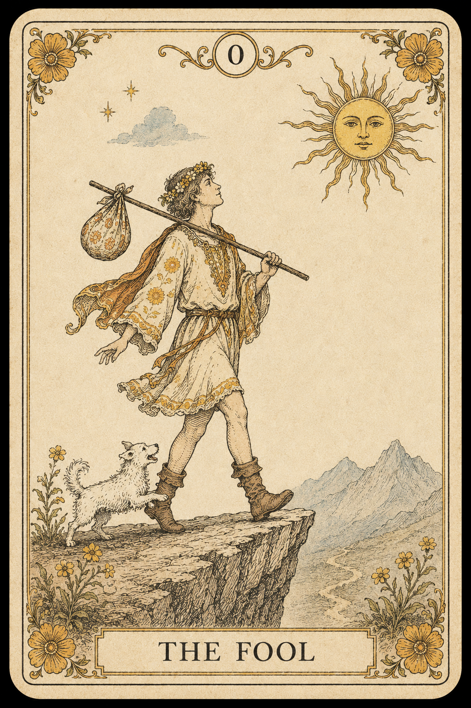
뒷면은 대칭 패턴 한 장이면 됩니다.
빈티지·신비로움 분위기, 정면 대칭, 2:3 비율, 베이지 종이 톤 + 갈색 라인 드로잉, 중세 일러스트.
인물과 풍경은 넣지 마세요.
좌우·상하가 모두 대칭인 기하학적 장식 패턴으로만 채워 주세요.
프레임 정중앙에 작은 ✦ 엠블럼 한 점만 놓아 주세요.슈트 네 가족과 메이저 한 장
| 슈트 | 대표 카드 | 프레임 |
|---|---|---|
| 메이저 | 바보 | 골드 |
| 컵 | 컵 에이스 | 장미 분홍 |
| 지팡이 | 지팡이 에이스 | 따뜻한 갈색 |
| 검 | 검 에이스 | 차가운 회청 |
| 펜타클 | 펜타클 에이스 | 잎 녹색 |
한 채팅창에서 한 장씩 받으십시오.
빈티지·신비로움 분위기, 정면 대칭, 2:3 비율, 베이지 종이 톤 + 갈색 라인 드로잉, 중세 일러스트.
다음 다섯 장을 한 채팅창에서 한 장씩 차례로 출력해 주세요.
1) 바보 — 절벽 끝 젊은이, 작은 봇짐, 하얀 강아지. 프레임 골드.
2) 컵 에이스 — 잔에서 솟는 물줄기, 위로 내려오는 비둘기. 프레임 장미 분홍.
3) 지팡이 에이스 — 새 잎 돋은 지팡이, 떠 있는 구름. 프레임 따뜻한 갈색.
4) 검 에이스 — 왕관 쓴 검, 월계수 가지. 프레임 차가운 회청.
5) 펜타클 에이스 — 별 무늬 동전, 너머의 정원. 프레임 잎 녹색.
다섯 장 모두 본체 색감과 라인은 베이지·갈색 한 결로 통일해 주세요.메이저 대표 — 마법사·연인·세계
빈티지·신비로움 분위기, 정면 대칭, 2:3 비율, 베이지 종이 톤 + 갈색 라인 드로잉, 중세 일러스트.
카드 이름: 마법사(The Magician).
핵심 상징: 작업대 위 컵·동전·검·지팡이 네 도구, 머리 위 무한대(∞) 표시, 한 손 위 한 손 아래.
주요 요소가 한 프레임 안에 정면으로 보이도록 배치해 주세요.빈티지·신비로움 분위기, 정면 대칭, 2:3 비율, 베이지 종이 톤 + 갈색 라인 드로잉, 중세 일러스트.
카드 이름: 연인(The Lovers).
핵심 상징: 위에서 두 팔 벌린 천사, 아래 정면 남녀 두 사람, 왼쪽 사과나무에 뱀, 오른쪽 불꽃 나무.빈티지·신비로움 분위기, 정면 대칭, 2:3 비율, 베이지 종이 톤 + 갈색 라인 드로잉, 중세 일러스트.
카드 이름: 세계(The World).
핵심 상징: 큰 월계관 화환 안 천을 두른 무희, 화환 네 모서리에 사람·사자·소·독수리.남은 73장을 받는 페이스
다섯 장씩 끊어 받으십시오. 이름과 핵심 상징만 갈아 끼우면 됩니다.
빈티지·신비로움 분위기, 정면 대칭, 2:3 비율, 베이지 종이 톤 + 갈색 라인 드로잉, 중세 일러스트.
다음 다섯 장을 한 채팅창에서 한 장씩 차례대로 출력해 주세요.
1) 카드 이름: ___ . 핵심 상징: ___, ___, ___. 프레임 색: ___.
2) 카드 이름: ___ . 핵심 상징: ___, ___, ___. 프레임 색: ___.
3) 카드 이름: ___ . 핵심 상징: ___, ___, ___. 프레임 색: ___.
4) 카드 이름: ___ . 핵심 상징: ___, ___, ___. 프레임 색: ___.
5) 카드 이름: ___ . 핵심 상징: ___, ___, ___. 프레임 색: ___.
다섯 장 모두 카드 본체 색감과 라인은 베이지·갈색 한 결로 통일해 주세요.응답이 끊겼을 때 한 묶음으로 살리는 자리
다섯 장 받는 도중에 응답이 길어 중간에서 끊기는 자리가 나옵니다. 입력창에 “계속” 한 단어만 보내시면 끊긴 자리에서 이어 받으실 수 있습니다. 앞 응답 뒤에 이어 받은 글을 그대로 붙이시면 한 묶음으로 살아납니다.
슈트(suit) 어휘 — 한 벌 카드의 가족 단위입니다. 컵·지팡이·검·펜타클 네 가족이 마이너 56장을 이룹니다.
[절 1 끝 점검] 카드 78장 한 벌이 한 폴더에 모이셨는지 짚으십시오. 모이지 않은 자리가 있으시면 같은 부탁말로 빠진 카드만 다시 받으시면 됩니다.
2. 이미지 수정 프롬프트로 카드 퀄리티 다듬기
결이 어긋난 카드가 한두 장 섞여 나옵니다. 마음에 드는 부분은 그대로 둔다 한 줄을 부탁말에 박으십시오.
손댈 칸은 한 번에 하나입니다. 색감 / 구도 / 디테일 / 통일성 가운데 하나만 짚으십시오.
방금 받은 바보 카드에서 색감 한 칸만 다듬어 주세요.
지금 베이지가 너무 노랗게 떠오릅니다. 조금 더 차분한 종이 톤(미색에 가까운 베이지)으로 바꿔 주세요.
프레임 두께와 장식, 인물의 자세, 봇짐과 강아지 위치는 모두 그대로 유지해 주세요.방금 받은 묶음의 세 번째 카드(지팡이 에이스)에서 프레임 한 칸만 다듬어 주세요.
같은 묶음의 다른 네 장과 비교해 보면 이 한 장만 테두리가 두껍게 나왔습니다.
다른 네 장의 가는 갈색 라인 프레임 결에 맞추어 같은 두께로 다시 둘러 주세요.
인물의 자세, 새 잎 돋은 지팡이와 구름, 베이지·갈색 색감은 모두 그대로 유지해 주세요.유지할 자리는 빠짐없이, 손댈 자리는 한 칸만 — 이 둘이 수정 부탁말의 골격입니다.
3. 화면 요구사항을 말로 설명해서 타로 사이트 만들기
절 3 시작 — 메모장에 받은 코드를 한 파일로 저장하기
이 절부터는 ChatGPT 에서 받으신 한 묶음 코드를 메모장에 옮겨 한 파일로 저장하시게 됩니다. 저장 결이 어긋나면 더블클릭해도 사이트가 열리지 않습니다. 아래 여섯 단계를 한 번에 짚으십시오.
- 메모장(노트패드)을 켭니다.
- ChatGPT 응답 한 묶음을 통째 복사해 메모장 안에 붙여 넣습니다.
- 위 메뉴 「파일 → 다른 이름으로 저장」을 누릅니다.
- 「파일 형식」을 「모든 파일」로 바꿉니다.
- 파일 이름을 정확히 index.html 로 적습니다 (확장자가 .txt 가 아니라 .html 이어야 더블클릭 시 브라우저가 엽니다).
- 저장 폴더를 정한 뒤 「저장」을 누릅니다.
여기까지 마치시면 받으신 코드가 한 파일로 자리 잡습니다. 이후 절 3 의 모든 자리는 같은 파일에 받으신 코드를 덮어쓰며 흐름이 이어집니다.
만들 사이트는 자리 네 개입니다. 한 페이지짜리 사이트입니다.
| 자리 | 한 줄 주소 | 하는 일 |
|---|---|---|
| 홈 | #/home | 주제 다섯 종 + 미리보기 한 장 |
| 질문 | #/ask/{주제} | 궁금한 것 적기 + 예시 셋 |
| 카드 뽑기 | #/spread/{주제} | 78장에서 세 장 뽑기 |
| 결과 | #/result | 카드 셋 + 풀이 |
네 자리를 하나씩 끊어 ChatGPT 에 받으십시오.
사이트 안 자리 이름은 # 뒤에 적힙니다
은 도서관 한 건물 안 책장 번호와 같습니다. 건물(사이트) 한 동에 책장(자리)이 여러 칸 있습니다. 한 페이지짜리 사이트가 인터넷에 다시 부탁하지 않고도 손님 화면 안에서만 자리를 갈아끼우며 여러 화면을 보여드리는 결입니다. 자리 명패는 #/home(들어가는 첫 자리), #/ask/love(질문 자리), #/spread/love(카드 펼치는 자리), #/result(결과 자리), #/history(이력 자리) 결로 적힙니다.
첫 자리 — 홈 화면 받기
새 채팅창을 펴 주십시오.
모바일에서 잘 보이는 한 페이지짜리 타로 사이트의 홈 화면을 만들어 주세요.
코드·CSS·자바스크립트·데이터 모두 한 파일에 담아서 한 묶음으로 주세요.
주제 데이터·카드 78장 정보·풀 해석 데이터는 다음 자리에서 더 받습니다.
상단 헤더: 좌측에 ✦ + "VIBE TAROT" 브랜드 텍스트.
화면 가운데 H1: "오늘의 타로".
한 줄 안내: "주제를 골라 보세요. 78장 풀 카드에서 세 장을 직접 뽑습니다."
미리보기 박스: 카드 앞면 한 장(fool.png), 위에 작게 "PREVIEW · 빈티지 베이지·갈색 라인 톤 — 앞면".
다섯 종 주제 그리드(모바일 한 줄, 큰 화면 두 줄):
연애운 ❀ / 금전운 ◈ / 직업운 ✦ / 인간관계 ✸ / 오늘의 운세 ☀.
각 칸은 아이콘, 제목, 한 줄 요약 순.
색감: 배경 검붉은 갈색, 강조 머스타드 골드, 글자 베이지. 카드 앞면 안쪽만 베이지 종이 톤.
폰트: 제목 Times New Roman 계열 세리프, 본문 산세리프, 글자 간격 살짝 넓게.
푸터: "made with ChatGPT · vibe coding 입문서 예제".프롬프트의 “세리프”는 글자 끝에 작은 가로 발이 달린 결, “산세리프”는 발이 없는 결입니다.
받은 코드를 메모장에 붙여 저장하십시오. 더블클릭하시면 화면이 열립니다.
주제 칸이 비어 있어도 정상입니다. 데이터는 다음 자리에서 받습니다.
메뉴판 한 장 따로 받기
방금 받은 홈 화면 코드는 그대로 두고, 다섯 종 주제 데이터를
같은 파일 안에 더해 주세요.
주제 한 종마다 일곱 가지: 1) 영문 식별 이름(love / money / work / relation / today),
2) 한국어 제목, 3) 아이콘 한 글자, 4) 한 줄 요약,
5) 안내 문구 한 줄, 6) 예시 질문 세 개, 7) 자리 라벨 세 개와 한 줄 힌트.
자리 라벨: 연애운 ❀ — 초반/중반/후반. 금전운 ◈ — 수입/지출/결과.
직업운 ✦ — 현재/도전/결과. 인간관계 ✸ — 나/상대/관계. 오늘의 운세 ☀ — 과거/현재/흐름.
홈 화면이 이 파일을 읽어 다섯 종 주제 그리드를 채우도록 연결해 주세요.받은 코드로 메모장을 덮어쓰고 더블클릭하시면 주제 칸이 채워집니다.
두 번째 자리 — 질문 화면 받기
앞에서 받은 코드는 그대로 두고, 자리 한 개만 더해 주세요.
홈에서 주제 칸을 누르면 명패가 #/ask/{주제 영문 이름}으로 바뀌면서 질문 자리가 열립니다.
좌측 상단: 뒤로가기(←) + 주제 아이콘·제목.
한 줄 안내: "{한 줄 요약} 무엇이 궁금하신가요?"
세 줄 높이 글 입력 칸 한 개, 120자까지.
안내 문구는 해당 주제 첫 예시 질문으로 자동 채워 주세요.
"자주 묻는 질문" 묶음: 예시 질문 세 개를 작은 단추로. 단추를 누르면 입력 칸으로 옮겨집니다.
맨 아래 "카드 뽑으러 가기 →" 단추.
입력 칸이 비어 있으면 첫 예시 질문이 자동 사용됩니다.
색감·폰트는 홈 화면과 같은 결로 통일.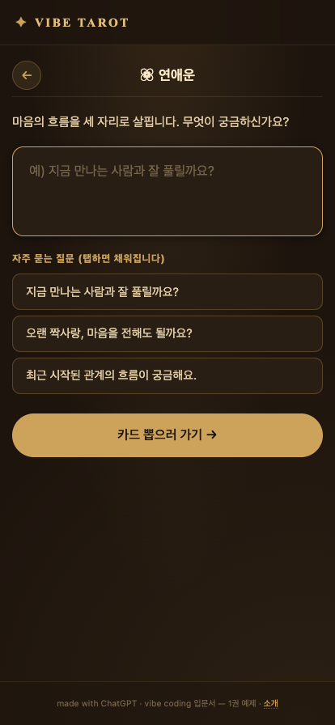
세 번째 자리 — 카드 뽑기 화면
이 사이트의 심장입니다. 78장이 가로로 흩뿌려져 있습니다. 한 장을 누르면 빈 자리로 날아가 뒷면이 앞면으로 회전합니다. 세 장이 모일 때까지 반복됩니다.
앞에서 받은 코드는 그대로 두고, 카드 뽑기 자리 한 개만 더해 주세요.
질문 자리에서 "카드 뽑으러 가기"를 누르면 명패가 #/spread/{주제 영문 이름}으로 바뀌며 열립니다.
카드 정보는 다음 자리에서 받고, 지금 단계는 모두 뒷면 모양으로만.
화면 진입 시 순서를 새로 섞고, 각 카드는 50% 확률로 정·역.
화면 위쪽: 뒤로가기(←), 주제 아이콘·제목, "1 / 3" 진행 단계. 아래 박스에 손님 질문.
가운데 빈 자리 셋(점선 테두리), 자리마다 이름과 한 줄 힌트.
안내: "{첫 자리 이름} 자리에 놓을 카드를 골라 주세요." 아래 "🔀 카드 다시 섞기" 단추.
아래쪽에 78장 가로 부채꼴(fan), ±3° 회전, 가로 스크롤.
한 장을 누르면 흩뿌림에서 흐려지고, 같은 카드가 위로 떠올라 첫 빈 자리로 0.7초 동안 날아가 닿는 순간 뒷면→앞면 회전.
안내 문구는 다음 자리 이름으로 갱신. "카드 다시 섞기"는 안 뽑힌 카드만 섞습니다.
세 장 모이면 1.2초 뒤 #/result 로 자동 이동. 모바일도 같은 동작.코드가 잘려 돌아오면 “전체 파일을 한 덩어리로 다시 주세요.” 라고 보내 주십시오.
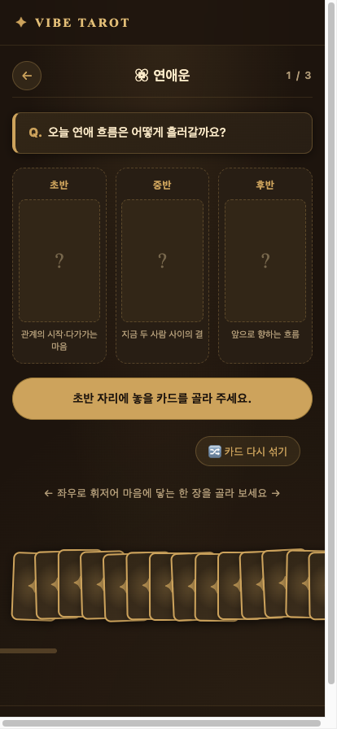
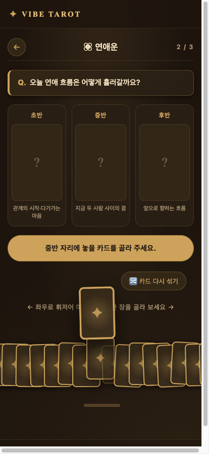
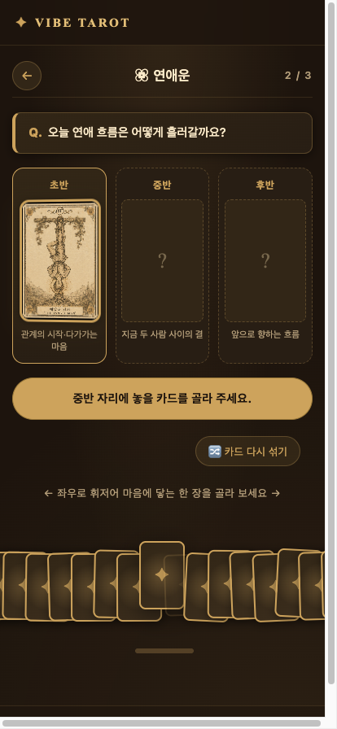
카드 정보 한 장 따로 받기
방금 받은 카드 뽑기 자리 코드는 그대로 두고, 78장 카드 정보를
같은 파일 안에 더해 주세요.
이 파일에는 일흔여덟 장 카드 정보가 차례로 담깁니다.
카드 한 장의 정보는 여덟 가지: 1) 영문 식별 이름(소문자), 2) 영문 카드 이름,
3) 한글 카드 이름, 4) 카드 번호, 5) 슈트 분류(major / cups / wands / swords / coins),
6) 카드 그림 파일 경로(images/{영문 식별 이름}.png),
7) 정방향 한 줄 메시지, 8) 역방향 한 줄 메시지.
메이저 22장은 바보(0)부터 세계(XXI)까지 차례로 담아 주세요.
마이너 56장은 네 슈트별 14장씩, 각 슈트마다 에이스(A) / 2 ~ 10 /
시동(P) / 기사(K) / 여왕(Q) / 왕(KG) 순서로 담아 주세요.
슈트별 톤은 컵 = 마음·물, 지팡이 = 의지·불, 검 = 생각·바람, 펜타클 = 현실·흙.
정·역 한 줄 메시지는 "오늘 하루를 따뜻하게 짚어 주는 한 문장" 톤.
카드 그림 파일이 없으면 카드 이름·번호·슈트 기호로 자동 대체해 주세요.
카드 뽑기 자리가 이 파일을 읽어 채우도록 연결해 주세요.프롬프트의 인물 카드 약어는 P(시동, Page), K(기사, Knight), Q(여왕, Queen), KG(왕, King) 결입니다.
끊겨 돌아오면 “끊긴 자리에서 이어서 출력해 주세요” 라고 보내 주십시오.
받은 코드로 메모장을 덮어쓰면 78장이 자리 잡습니다.
[절 3 끝 점검] 첫 화면이 휴대전화에서 떠올랐는지 짚으십시오. 떠오르지 않으시면 저장하신 파일 확장자가 정확한지, 같은 폴더에 받으신 파일이 다 모여 있는지 다시 살피십시오.
4. 조건을 넣어 타로 리딩 결과 만들기
결과는 네 층입니다.
- 흐름 한 줄.
- 자리별 풀이 세 블록.
- 패턴 진단 한 줄.
- 자세한 풀이 다섯 문장.
풀이는 정·역 조합 아홉 갈래 가운데 하나로 갈라집니다.
방금 만든 카드 뽑기 자리 코드는 그대로 두고, 결과 화면 한 개만 더해 주세요.
세 자리에 카드 세 장이 모이면 #/result 로 바뀌며 결과 화면이 떠오릅니다.
다섯 부분:
1) 머리 줄: 왼쪽 ← 홈 단추, 오른쪽 주제 아이콘 + "○○ 리딩".
2) 질문 박스: "Q. ○○○" 인용.
3) 카드 세 장 가로 + 자리 라벨. 누르면 모달이 떠오를 자리.
4) 종합 해석 박스:
- "흐름" + "{초반} {카드1}({정/역}) → {중반} {카드2}({정/역}) → {후반} {카드3}({정/역})" 한 줄.
- 자리별 풀이 세 블록: 자리 라벨 / 카드 한글 이름 / 정·역 배지 / 한 줄 메시지.
- "풀이" 다섯 문장: ① 흐름 요약 ② 정·역 조합 아홉 갈래 해당 한 줄 ③ 초반·중반 이어짐 ④ 후반 강조 ⑤ 후반 자세한 메시지.
5) 액션: "카카오톡 공유"(절 7) / "같은 주제 다시" / "다른 주제".
② 자리에 들어갈 정·역 조합 아홉 갈래:
- 모두 정: 순하게 풀려 가는 시기. - 모두 역: 한 박자 쉬어 가는 결.
- 첫 자리만 역: 시작은 막혔지만 풀려 가는 흐름. - 마지막만 역: 마지막이 엇갈리는 자리.
- 초·중 역 후 정: 마지막에 길이 열리는 흐름. - 첫 정 후 역: 중간부터 흔들리는 자리.
- 가운데만 역: 중간 한 번이 흔들리는 자리. - 첫·끝 역, 가운데 정: 중간만 잠시 풀리는 흐름.
- 그 외 섞임: 정·역이 한 자리에 섞인 흐름.
톤 한국어 존댓말, "오늘 하루의 결을 짚어 주는 따뜻한 한 마디". 색감 검붉은 갈색 + 머스타드 골드.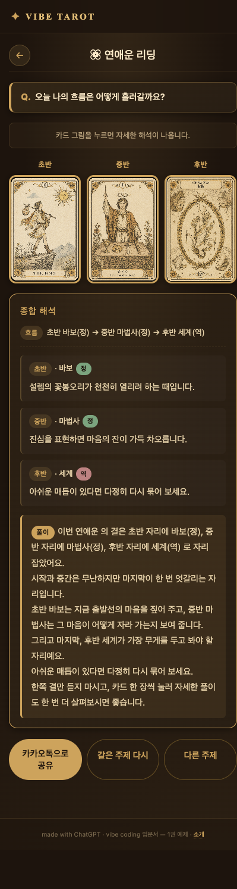
카드 한 장을 더 깊이 — 모달 한 자리
카드를 누르면 네 영역 풀이가 정·역 양쪽으로 펼쳐지는 모달을 더합니다.
방금 만든 결과 화면 코드는 그대로 두고, 카드 한 장 모달 자리만 더해 주세요.
배경 전체에 어두운 반투명 막, 그 위 가운데 박스 한 장이 떠오릅니다.
박스 안 위에서 아래로:
1) 누른 카드 한 장(큰 사이즈) + 자리 라벨,
2) 카드 한글·영문 이름 + 카드 번호,
3) 자리 힌트 한 줄, 4) 자리 메시지 한 줄, 5) 정·역 배지,
6) 네 영역 풀 해석: 연애 / 재물 / 직업 / 관계 네 줄, 영역마다 정·역 한 줄씩.
닫기: ✕ 단추 / ESC 키 / 박스 바깥 클릭.
네 영역 풀 해석은 다음 자리에서 받습니다.자료에는 다섯 자리가 키로 들어갑니다. 모달은 그 가운데 네 영역만 보여 줍니다.
방금 받은 카드 모달은 그대로 두고, 카드 한 장 풀 해석 묶음을
같은 파일 안에 더해 주세요.
카드 한 장 풀 해석 묶음:
- 카드 식별 이름(영문 소문자, 앞 자리에서 정한 이름)을 키로,
- 다섯 자리(general / love / money / work / relation)를 자리로,
- 자리마다 정·역 한 줄 짝으로.
이번 부탁은 메이저 22장만. 바보(0)부터 세계(XXI)까지,
한 장당 다섯 자리 × 정·역 = 열 줄, 합 220줄.
마이너 56장은 같은 모양으로 슈트마다 한 번씩 네 번에 나누어 받습니다.
톤은 한국어 존댓말, 사십~육십 자, "오늘 하루의 결을 짚어 주는 따뜻한 한 마디".
어미는 "~해 보세요" / "~한 시기입니다".방금 받은 메이저 22장과 같은 모양으로
{슈트 이름: 컵 / 지팡이 / 검 / 펜타클} 14장을 이어 주세요.
다섯 자리(general / love / money / work / relation), 자리마다 정·역 한 줄 짝.
톤은 메이저와 같은 결, 사십~육십 자, 따뜻한 한 마디 어미.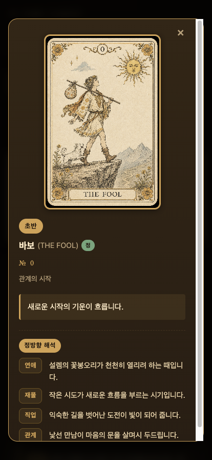
풀이 톤이 어긋나면 “조금 더 부드럽게” 한 마디만 보내 주십시오.
[주의] AI 풀이는 참고용입니다. 의료·금융·법률 결정 근거로 받지 마십시오.
브라우저를 닫으면 결과가 사라집니다. 다시 살리는 자리는 다음 절입니다.
5. 기능 요구사항을 말로 설명해서 결과 저장 만들기
새로고침을 누르면 카드 세 장이 사라집니다. 사이트가 오늘 결과를 기억하지 못합니다.
두 가지 약속을 더합니다. 첫째, 오늘 결과를 자정까지 둡니다. 둘째, 최근 다섯 번 결과를 이력으로 모읍니다.
[비유] 칠판은 닫으면 지워집니다. 브라우저 안 작은 노트는 닫아도 남습니다.
저장은 손님 브라우저 안에만 들어갑니다. 서버로 올라가지 않습니다.
저장 자리는 두 칸입니다. 오늘 한 묶음, 최근 다섯 건 이력입니다.
앞에서 받은 코드는 그대로 두시고, 결과 화면 도달 자리에서 두 가지 저장 자리를 더해 주세요.
첫 번째(키: vibe_tarot_today): 오늘 결과 한 묶음 + 오늘 날짜(YYYY-MM-DD).
결과 화면 진입 시 저장 날짜가 오늘과 같으면 카드 세 장과 종합풀이를 다시 보여 주고,
다르면(자정 지난 경우) 무시하고 처음 화면으로 돌려보내 주세요.
두 번째(키: vibe_tarot_history): 최근 다섯 건 이력. 새 결과는 맨 앞에 끼워 넣고, 여섯 번째부터 자동으로 빠집니다.
홈 화면 위쪽에 "오늘 뽑은 결과 다시 보기" 단추 — 첫 번째 저장이 오늘 자리일 때만 떠오릅니다.
새 자리 명패 #/history. 이력 다섯 건이 위에서 아래로.
한 건마다: 주제 아이콘·제목, 뽑은 시간(오늘 14:30 · 5/8 22:10), 한 줄 질문, 카드 세 장 한글 이름·정역.
이력이 없으면 "아직 기록이 없습니다. 한 번 뽑아 보세요." 한 줄.받은 코드로 메모장을 덮어쓰고 더블클릭하십시오. 같은 날에는 새로고침을 눌러도 카드 세 장이 떠오릅니다. 자정이 지나면 저장은 비워집니다.
자정이 지난 다음 접속 시 사이트가 저장 날짜를 짚어 오늘이 아니면 그 묶음을 무시하고 처음 화면으로 돌아갑니다. 이력 다섯 건은 그대로 남아 #/history 자리에서 짚으실 수 있습니다.

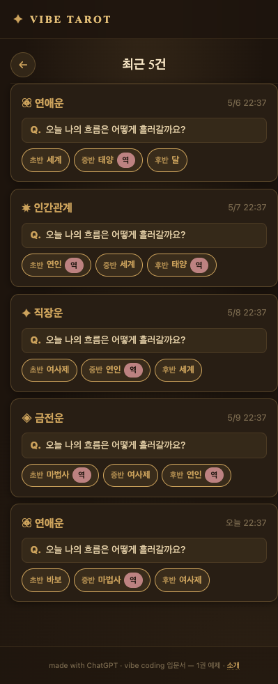
저장은 세 가지로 점검하실 수 있습니다.
- F5 새로고침 후 카드 세 장이 같은 자리에 떠오르는지.
- #/history 자리에 방금 결과가 맨 위에 올라가 있는지.
- 자정을 넘긴 뒤 다시 열어 처음 화면으로 돌아오는지.
6. F12 로 저장 데이터 확인하고 삭제하기
브라우저 안 살펴보는 자리(개발자 도구)로 저장을 확인하실 수 있습니다. F12 한 번이면 새 창이 열립니다.
[비유] F12 는 자동차 보닛 손잡이입니다. 한 번 열면 안쪽이 보입니다.
크롬·엣지에서 네 단계입니다.
1. 사이트를 띄우고 F12 를 누릅니다. 새 창이 열립니다.
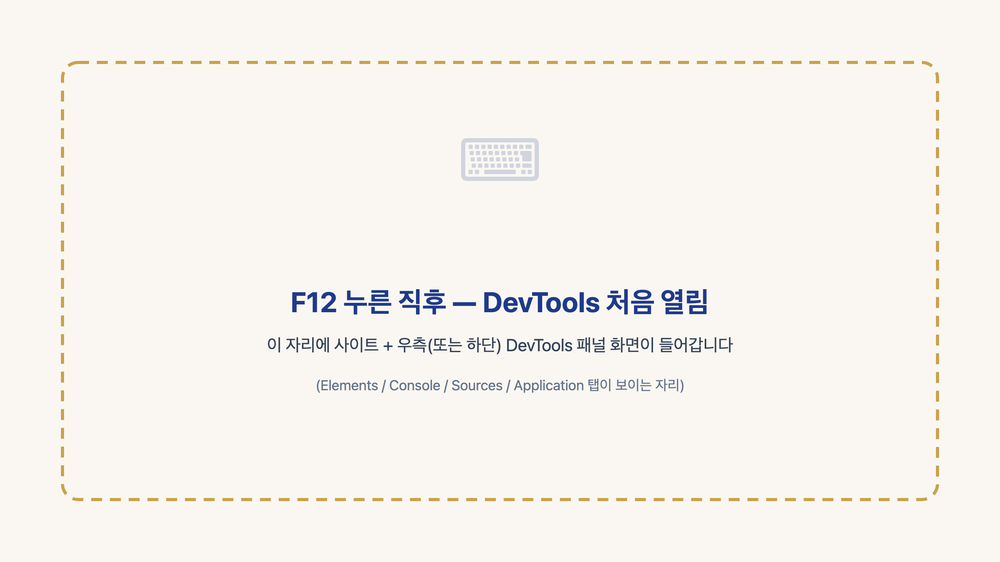
2. 위쪽 차림표에서 Application 탭으로 옮깁니다. 왼쪽에서 Storage → Local Storage → 사이트 주소 순으로 펴십시오.
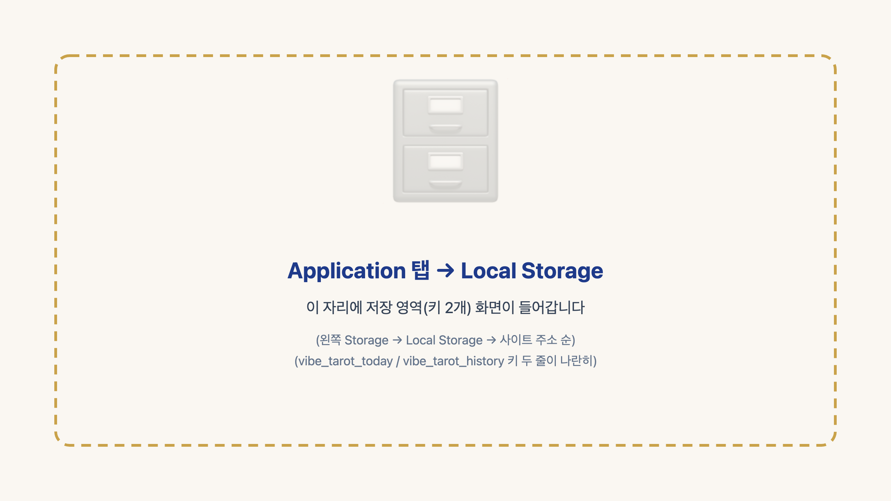
영문 라벨은 한글로 짚으면 길을 잃지 않으십니다. Application 은 애플리케이션, Storage 는 저장 자리, Local Storage 는 이 브라우저 안 저장 자리입니다.
두 저장 자리가 vibe_tarot_today / vibe_tarot_history 키로 나란히 떠 있습니다.
3. 키 이름을 누르시면 오른쪽에 값이 펼쳐집니다.
JSON(제이슨, JavaScript Object Notation)은 키와 값 한 묶음 결로 저장 자리를 적은 글자 문서입니다.
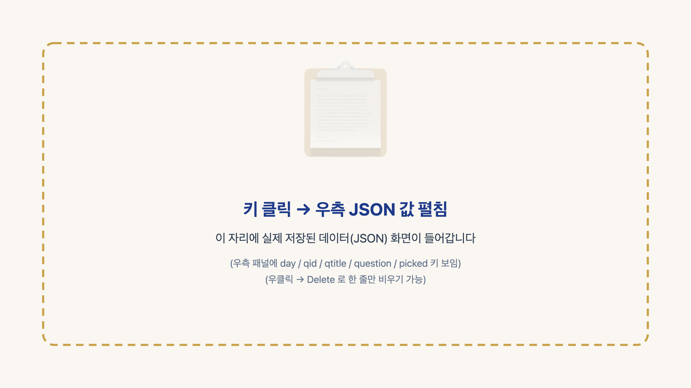
4. 마우스 오른쪽 단추 → Delete 로 그 줄만 지웁니다. vibe_tarot_today 를 비우고 다시 열면 자정 동작과 같은 결입니다.
[주의] 저장은 손님 브라우저 안에만 있습니다. 여러 손님 결과를 한 자리에 모으려면 서버와 여러 손님 자료 모으는 자리가 따로 필요합니다.
7. 카카오톡 공유 기능 만들기
결과 화면 단추 한 개로 카드 세 장이 카카오톡 대화창에 따라 나갑니다. 카카오에서 키 한 줄을 받아 사이트 머리에 끼워 두어야 합니다.
[비유] 키 한 줄은 입구 신분증 확인입니다.
키 한 줄은 다섯 단계로 받으십시오.
1. 카카오 디벨로퍼스 첫 자리에 들어가기. 주소창에 developers.kakao.com 한 줄을 넣고 평소 쓰시는 카카오 계정으로 들어가십시오.
2. 내 애플리케이션 → 애플리케이션 추가. 위쪽 차림표에서 내 애플리케이션 자리로 옮겨 애플리케이션 추가 단추를 누르십시오. 앱 이름과 회사명 두 칸을 채우면 자리가 한 칸 만들어집니다.
3. 만든 앱 들어가기 → JavaScript 키 한 줄 복사. 방금 만든 앱 이름을 누르고 앱 키 자리로 옮기십시오. 네 줄 가운데 JavaScript 키 한 줄을 통째로 복사하시면 됩니다.
4. 플랫폼 → Web → 사이트 도메인 등록. 왼쪽 차림표에서 플랫폼 자리로 옮겨 Web 단추를 누르십시오. 배포 전에는 임시로 http://localhost(내 컴퓨터 안 임시 주소) 한 줄, 배포 뒤에는 GitHub Pages 주소로 갈아끼우시면 됩니다.
5. 카카오 로그인 → 동의 항목. 공유만 쓰시면 동의 항목 자리는 따로 손볼 자리가 없습니다. 들어가서 한 번 짚어 보고 그대로 빠져나오시면 됩니다.
앞에서 받은 코드는 그대로 두시고, 결과 화면 액션 영역의
"카카오톡으로 공유" 단추가 실제로 동작하도록 한 자리만 더해 주세요.
공유 문구:
"오늘의 {주제} — {자리1} {카드1}{정/역} / {자리2} {카드2}{정/역} / {자리3} {카드3}{정/역}
VIBE TAROT 에서 직접 뽑아 보세요."
카카오 SDK 가 초기화돼 있으면 Kakao.Share.sendDefault 로 공유창을 띄우고,
닿지 않으면 navigator.share 로 같은 문구를 넘겨 주세요.
둘 다 닿지 않으면 alert 한 번으로 위 문구를 띄워 직접 복사해 보낼 수 있게 부탁드립니다.
카카오 SDK 키 자리는 YOUR_KEY 그대로 두세요.
developers.kakao.com 에서 받은 JS 키로 직접 갈아끼우는 자리입니다.받은 코드를 메모장에 붙이신 뒤 메모장 위쪽 차림표에서 편집 → 찾기(또는 Ctrl+F)를 누르고 YOUR_KEY 한 단어를 찾아, 카카오에서 받은 JS 키 한 줄로 갈아끼우십시오.
안전망 세 자락입니다.
- 키가 있으면 카카오톡 공유창이 뜹니다.
- 카카오가 닿지 않으면 휴대전화 기본 공유창이 같은 문구를 띄웁니다.
- 그 자리도 닿지 않으면 안내 창이 같은 문구를 띄웁니다.
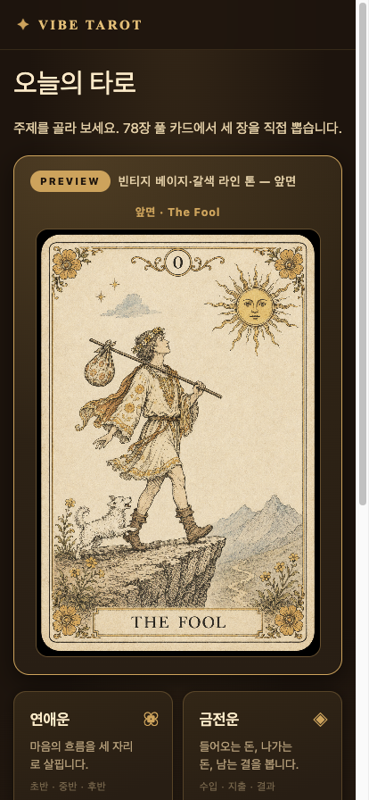
[주의] 카카오톡 공유창은 developers.kakao.com 에서 키를 받아 YOUR_KEY 자리에 끼워 넣어야 열립니다.
8. GitHub Pages 배포와 도메인 연결
손님이 휴대전화로 열어 보시려면 사이트가 인터넷에 자리 잡아야 합니다. 무료로 빌려 주는 곳이 GitHub Pages 입니다.
[비유] GitHub Pages 는 공유 식당 한 칸입니다. 임대료 0원.
(1) GitHub 가입 — 처음 오시는 분
GitHub 첫 자리입니다. 이메일·비밀번호·사용자 이름 세 칸을 채워 주십시오.
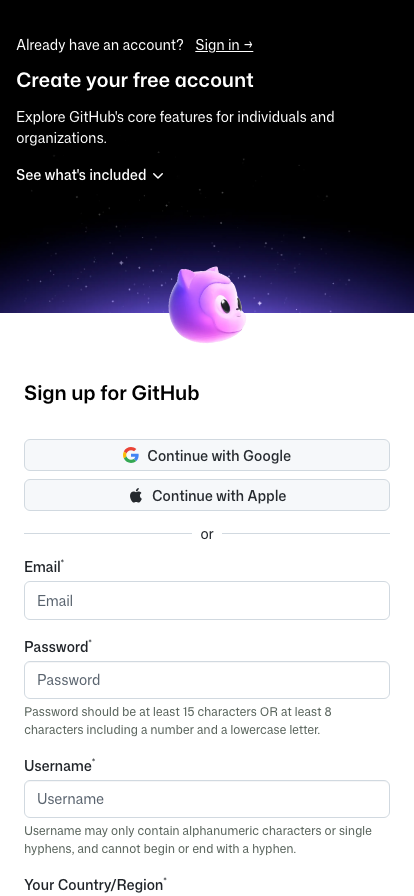
[실무 팁] 사용자 이름은 영문 소문자·숫자만, 짧게 두십시오. 사이트 주소에 그대로 들어갑니다.
(2) GitHub 로그인 — 이미 계정이 있는 분
이미 계정이 있으시면 사용자 이름과 비밀번호 두 칸으로 로그인하십시오.
(3) 새 저장소 만들기
오른쪽 위 + → New repository 를 눌러 주십시오. 저장소 이름은 vibe-tarot, Public, 자동 생성 자리는 비워 두십시오.
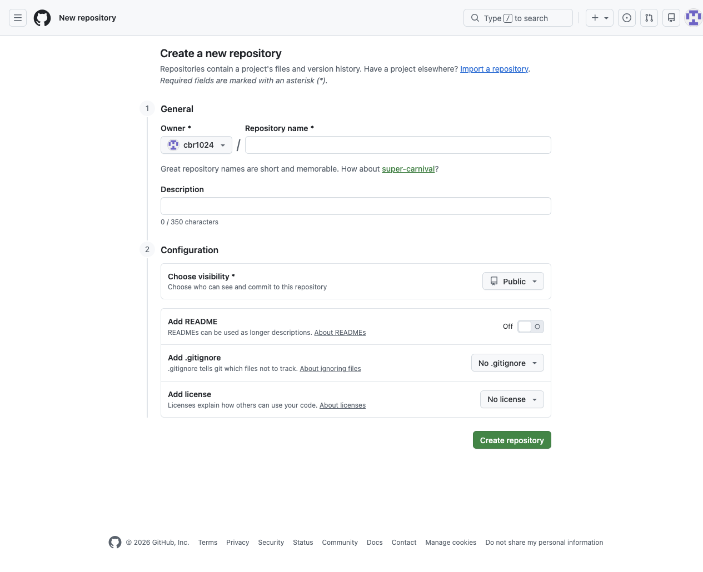
(4) 폴더 통째로 올리기
저장소 화면 가운데 “uploading an existing file” 링크를 눌러 주십시오.
손에 한 묶음을 모으십시오.
- 메모장에서 저장하신 한 파일 (절 3 에서 만드신 파일)
- 카드 79장 PNG 가 든 images 폴더 한 개 (절 1 다운로드 길 또는 직접 만드신 자리)
두 자리를 한 번에 끌어다 놓고 “Commit changes” 단추를 눌러 주십시오.
(5) Pages 활성화
저장소 화면을 새로고침하시고 Settings → Pages 로 들어가 주십시오. Source 는 Deploy from a branch 로 두십시오. Branch 는 main / (root) 두 칸을 짝으로 고른 뒤 Save 입니다.
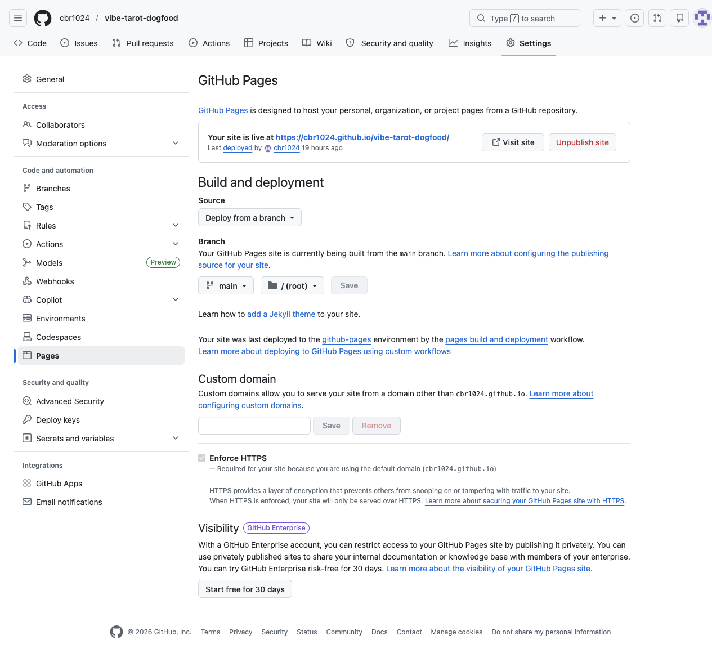
(6) 주소 받기
1~2분 기다리시고 같은 화면을 다시 열어 보십시오. “Your site is live at https://{사용자이름}.github.io/vibe-tarot/” 한 줄이 떠오릅니다.
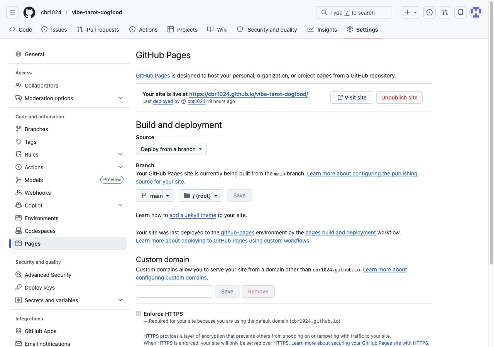
(7) 모바일에서 확인
주소 한 줄을 휴대전화 주소창에 넣으십시오. 사이트가 떠오르면 배포 끝입니다. 화면이 깨지면 파일 이름 대소문자를 짚으십시오.
자주 막히는 자리는 세 군데입니다. Pages 주소가 1~2분 지나도 빈 자리면 Settings → Pages 자리를 다시 여십시오. Branch 자리가 main / (root) 로 박혔는지 한 번 더 짚으십시오.
카드 그림이 안 떠오르면 images 폴더가 같이 올라갔는지 짚으십시오. 개발자 도구 Console 자리에 404 가 떠오르면 파일 이름 대소문자 차이를 짚으십시오.
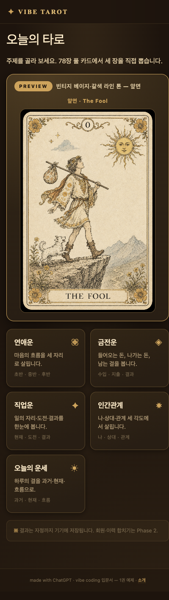
[확인] https://{사용자이름}.github.io/vibe-tarot/ 를 휴대전화로 열어 사이트가 떠오르면 통과입니다. [팁] 다음에 한 줄 고치실 때는 저장소 화면에서 파일을 누르고 연필 아이콘으로 손보시면 됩니다.
부록 A. 다음 단계 안내
A-1. 자산 저장소 다시 보기
자산 저장소 자리는 https://github.com/cbr1024/vibe-tarot-assets 입니다. images 폴더에 카드 79장 PNG 가 들어 있고, prompts 묶음 한 자리에 ChatGPT 부탁말 10 묶음이 모여 있습니다. 책에서 사용한 그대로의 자료가 모여 있는 자리입니다.
A-2. 참고 사이트 영감
책의 디자인·기능 영감 출처는 https://tarotpark.com/m/tarot/category.php 한 자리입니다. 빈티지 베이지·갈색 라인 톤, 78장 한 벌, 모바일 한 손 흐름이 한 자리에 모여 있는 사이트입니다. 캡처는 박지 않고 영감 안내 한 줄만 두었습니다.
A-3. 마침
여기까지 절 1 부터 절 8 까지 한 손에 닿으셨습니다. 다음 책에서는 카드 한 벌 너머 — 손님 한 분 한 분 결과를 서버 한 자리에 모으는 길을 다룰 자리입니다. 같이 만들어 보겠습니다.